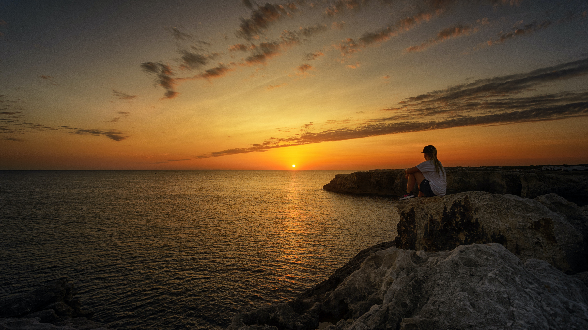
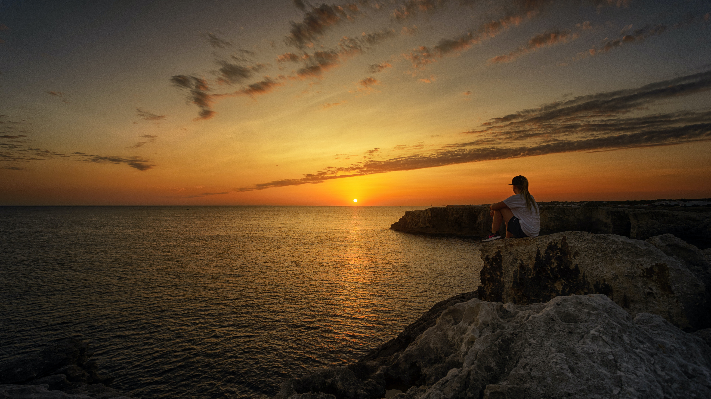

Como amamos y queremos seguir aventurando en este hermoso planeta, te dejamos noticias para concientizar de lo que esta sucediendo.
Naturalistas piden frenar el impacto humano sobre el planeta en el Día de la Madre Tierra
Naturalistas españoles han llamado a la reflexión para frenar el impacto de las actividades humanas sobre el “hogar común” y generar conciencia para un desarrollo sostenible con motivo del Día Mundial de la Madre Tierra, que este lunes celebra diez años desde su designación oficial por parte de la ONU. “El Día Internacional de la Madre Tierra sirve para generar conciencia de forma simbólica” sobre la interdependencia entre los seres humanos, las demás especies vivas y el planeta que habitamos, ha explicado el biólogo Miguel Delibes de Castro. Porque “en los casi 200.000 años de historia como Homo Sapiens“, la mayor parte del éxito del hombre ha radicado “en el crecimiento y explotación de los recursos terrestres“, actividades que desde hace medio siglo “están generando problemas de habitabilidad en la Tierra“. Por ello, el experto ha llamado a la reflexión general, para que el “único ser vivo racional en la Tierra tome las riendas del futuro“, aunque, ha afirmado, “más allá de este día” habría que plantear planes para tomar decisiones que “faciliten el desarrollo sostenible“, como la instalación de paneles solares en los edificios para la generación de energía, medida que espera llegue en un futuro a ser “obligatoria”. El que fuera director de la Estación Biológica de Doñana (EBD) entre 1988 y 1996, observa en el cambio climático “una de las muchas caras del mismo problema del medio ambiente“, por lo que el Día de la Madre Tierra “debe ser una jornada que sirva para darnos cuenta de que el planeta se nos queda pequeño porque nos creamos muchas necesidades“.
 


Qué hacer el Día de la Madre Tierra
Para profundizar esta conexión que une a las personas con la Madre Tierra, Araújo recomienda “ir al campo, descalzarse y caminar por nuestra casa común reflexionando sobre nuestra actitud hacia los elementos básicos para la vida en la Tierra“, que a pesar del ser humano, “sigue regalándonos todo aquello que es esencial“. Sin embargo, según Araújo es algo que “tristemente no resultará fácil, ya que la ciudad es el hábitat común de muchas personas empeñadas en crear una frontera entre su casa y la vivienda común a todos los seres vivos“, algo que a su juicio es “un atropello antiracionalista contra la dignidad humana“, porque “no podemos destruir lo que nos permite vivir sin perder una referencia fundamental“. El Día Internacional de la Madre Tierra sirve según la ONU para concienciar a la población mundial sobre los problemas que afectan al planeta con el objetivo armonizar el desarrollo económico con el de la Naturaleza. EFEverde
Incendios forestales
Las consecuencias de esto podrían ser devastadoras. Si el mar continúa calentándose, tendrá un enorme impacto en el clima, desde temperaturas extremas, tormentas y sequías hasta inundaciones y temporadas de lluvias tardías que perturban los ecosistemas. Cuando fuertes vientos desgarran paisajes cálidos y secos como Australia, el riesgo de incendios forestales aumenta significativamente. Pero el riesgo también está creciendo en regiones que alguna vez fueron templadas y frescas.
Antes de que sea tarde
Leonardo DiCaprio, activista ambiental y embajador de las Naciones Unidas (ONU), investiga lo que se debe hacer para evitar que el cambio climático provoque la interrupción catastrófica de la vida en el planeta Tierra.
Contaminacion marina
El plástico inunda ya los lugares más remotos del planeta y, más cerca de nuestras fronteras, supone el 95 por ciento de los residuos del Mar Mediterráneo, cuya contaminación acapara la más alta densidad de microplásticos flotantes en sus aguas. Hasta hace poco, los científicos creían que la contaminación por plásticos del océano venía principalmente de 20 ríos. Sin embargo, un estudio publicado en mayo de 2021 descubrió que el plástico que inunda los océanos llega a través de más de mil ríos de todo el mundo, lo que complica las posibles soluciones. Debido a la inmensidad y profundidad de los océanos, el hombre creía que podría utilizarlos para verter basura y sustancias químicas en cantidades ilimitadas sin que esto tuviera consecuencias importantes.